Project 1 Write-Up
Website: https://cal-cs184-student.github.io/sp22-project-webpages-evelynwu88/
Task 1
1. Walk through how you rasterize triangles in your own words.
For every pixel, we check if the center of that pixel is within the bounds of the triangle. We check this by
doing three line test, which is by taking the dot product of the center of the pixel with the normal vector of
one of the lines of the triangle. We do this for all three lines, making sure that the dot product is all >= 0.
We also need to take care of the other direction, so we also check if the dot products are all <= 0. If either
of these two cases is true, then we know that the point is within the triangle. This means that we can fill
the pixel with the given color.
2. Explain how your algorithm is no worse than one that checks each sample within the bounding box of
the triangle
Our algorithm only goes through the pixels within a bounding box of the triangle. We first figure out
the lowest and highest x and y values to find the 4 corners of the bounding box. Then for every pixel we
check if it is within the triangle and if it is, we fill that pixel with the provided color. Hence, it
is no worse than checking each sample within the bounding box of the triangle.
3. Show a png screenshot of basic/test4.svg with the default viewing parameters and with the pixel
inspector centered on an interesting part of the scene
Task 2
1. Walk through your supersampling algorithm and data structures. Why is supersampling useful? What
modifications did you make to the rasterization pipeline in the process? Explain how you used
supersampling to antialias your triangles.
In task 2, we implemented supersampling by dividing each pixel into sample rate number of subpixels, and
sample each subpixel separately, treating the sample buffer as a larger grid that contains subpixels. We
achieve this by adding 2 for loops in our rasterize_triangle function, which goes over each subpixel
within a pixel. We check if each subpixel is inside of the triangle, and is so, we store the colors of
these subpixels in our buffer frame, then we then calculate the average of these sub pixels and assign
it to the pixel’s color in resolve_to_frame_buffer function. We also modified fill_pixel function to be
filling each subpixel one by one, to allow for lines and points to be rendered correctly. Supersampling
is useful in our case to antialias our triangles by present an averaged color or gradient instead of
portraying the color in an “all or none” fashion. This smoothes out our image and decreases the
occurrences of jaggies.
2. Show png screenshots of basic/test4.svg with the default viewing parameters and sample rates 1, 4,
and 16 to compare them side-by-side. Position the pixel inspector over an area that showcases the effect
dramatically; for example, a very skinny triangle corner. Explain why these results are observed.
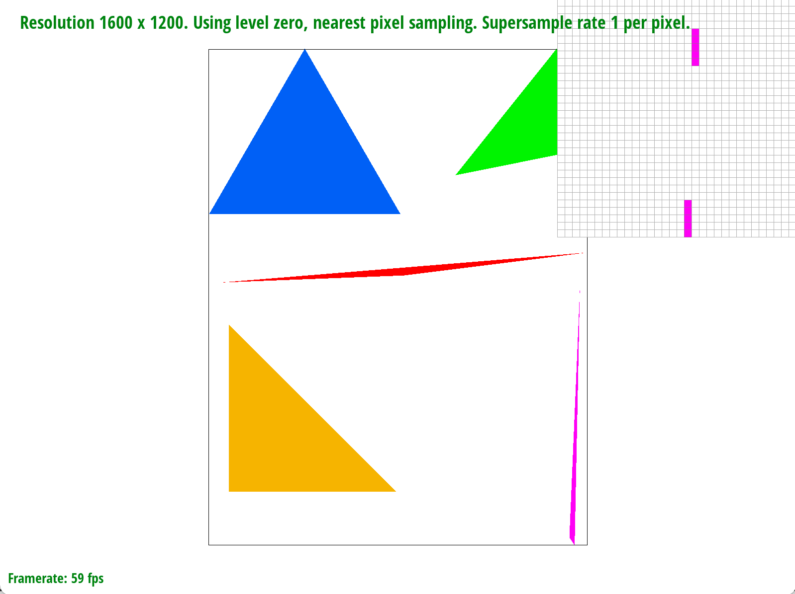
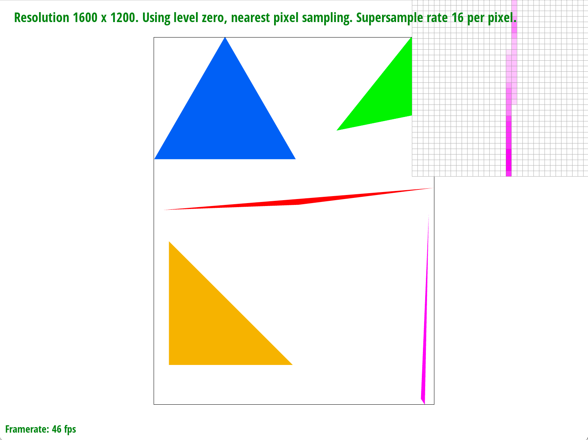
As the sample rate increases, the top part of the pink triangle becomes more continuous and smooth. This
is because supersampling divides a pixel into multiple subpixels and samples each subpixels’ centers to
see if it is within the triangle. Then supersampling averages all the subpixels’ colors to figure out
what color to fill the entire pixel. Normal sampling just checks the center of the pixel to see if it is
within the triangle. So if the center of a pixel is not within the triangle, then it will not pass the
three line test. Thus the pixel will be counted as outside the triangle and will not be filled with the
given color. But it is possible that some parts of the pixel are within the triangle, so when using
supersampling, those subpixels will get a color assigned to that subpixel. When we average the color of
all the subpixels, the entire pixel will have some color instead of just the default white color.
Task 3
1. Create an updated version of svg/transforms/robot.svg with cubeman doing something more interesting,
like waving or running. Feel free to change his colors or proportions to suit your creativity. Save your
svg file as my_robot.svg in your docs/ directory and show a png screenshot of your rendered drawing in
your write-up. Explain what you were trying to do with cubeman in words.
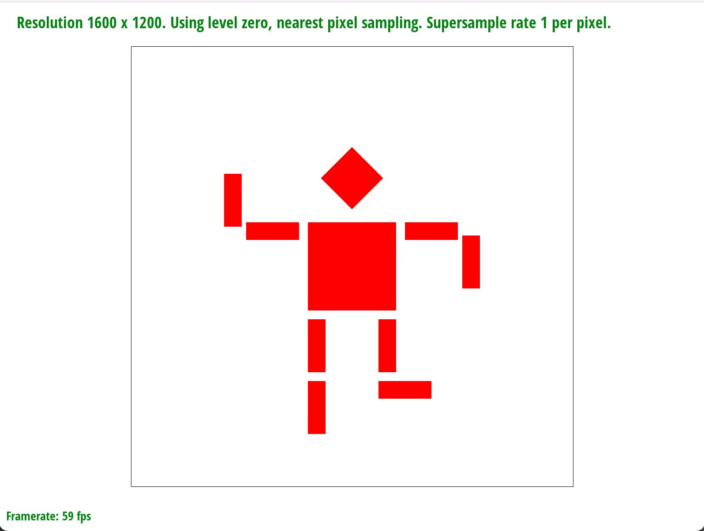
We are trying to make the robot look like it is running to the left. What we did to achieve this was
find the second (outer) half of the arms and right leg. Then we rotated all of them by 90 degrees. Then
we translated each of the rectangles so that they aren’t too close to the inner half of the arms/leg.
Task 4
1. Explain barycentric coordinates in your own words and use an image to aid you in your explanation. One
idea is to use a svg file that plots a single triangle with one red, one green, and one blue vertex,
which should produce a smoothly blended color triangle.
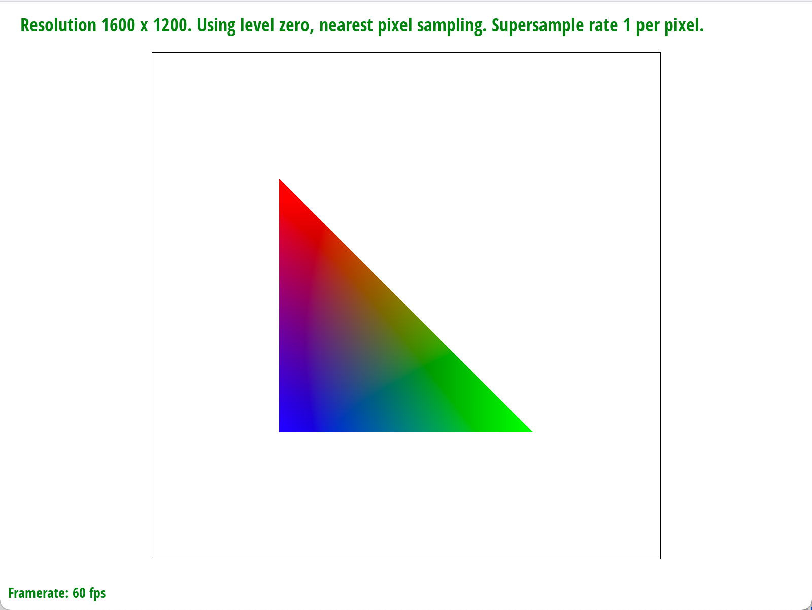
The image above shows a triangle with red, green, and blue vertices with gradients among them.
Barycentric coordinates linearly interpolate the RGB values at each vertex and essentially computes the
distance from a given point to each sides. It can be used to express the position of any point in the
triangle with alpha, beta, and gamma, in which these 3 scalars also represent proportional areas of RGB
colors within the triangle. Each point within the triangle in the image above is colored based on the
barycentric coordinate.
2. Show a png screenshot of svg/basic/test7.svg with default viewing parameters and sample rate. If you
make any additional images with color gradients, include them.
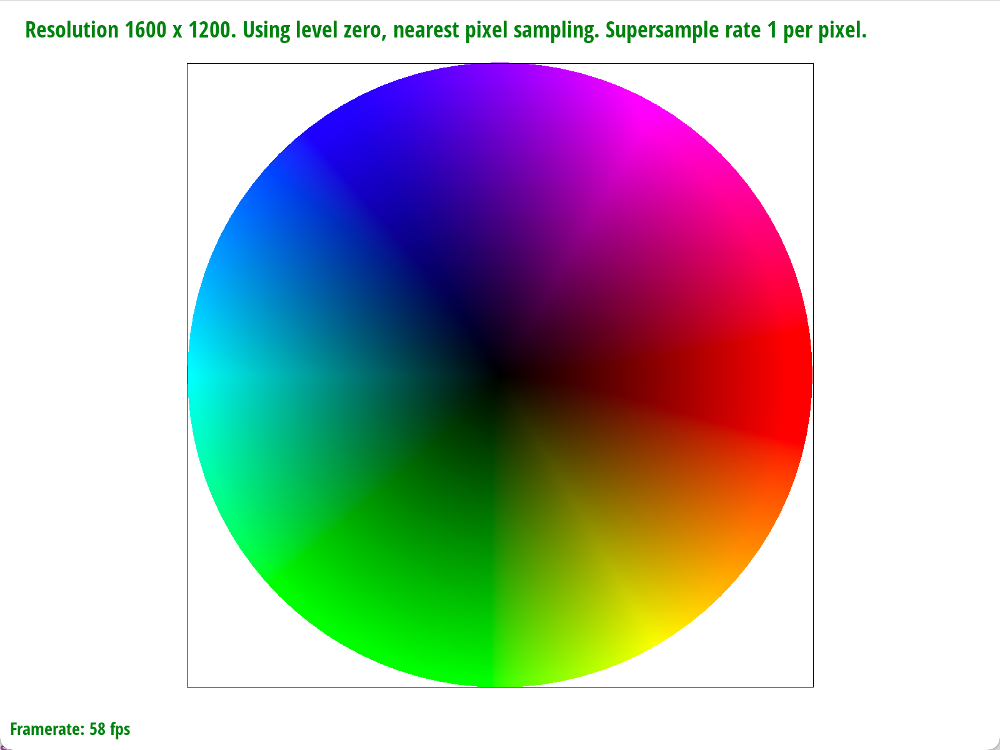
Task 5
1. Explain pixel sampling in your own words and describe how you implemented it to perform texture
mapping.
Briefly discuss the two different pixel sampling methods, nearest and bilinear.
Pixel sampling is to figure out the color of every pixel by first finding its corresponding point (u, v)
on the texture and using the pixel(s) around (u, v) to choose the color for the pixel. We first use
barycentric coordinates to find the alpha, beta, and gamma for each sample point. Then using the alpha,
beta, and gamma, we find which point it corresponds to on the texture map. For nearest-pixel sampling,
we find the pixel on the texture map that is closest to (u, v), which is the point on the texture map
that corresponds to the pixel we are trying to sample. Then that pixel gets assigned to the color of the
closest point on the texture map. For bilinear sampling, we find the four points on the texture map
around (u, v). Based on the distance from (u, v) to each of the four points, we take a “weighted
average” of the four colors and assign that color to the pixel we are sampling. The closer the point is
to one of the 4 points, the more weight it gets and the stronger its influence is on the assigned color.
2. Check out the svg files in the svg/texmap/ directory. Use the pixel inspector to find a good example
of
where bilinear sampling clearly defeats nearest sampling. Show and compare four png screenshots using
nearest sampling at 1 sample per pixel, nearest sampling at 16 samples per pixel, bilinear sampling at 1
sample per pixel, and bilinear sampling at 16 samples per pixel.
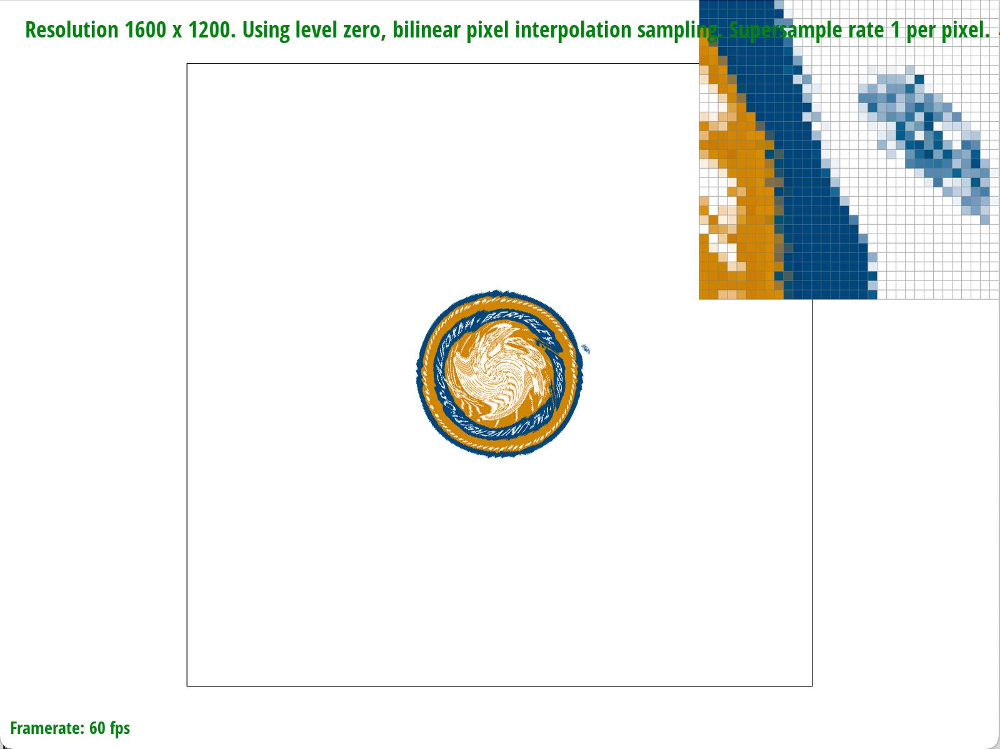
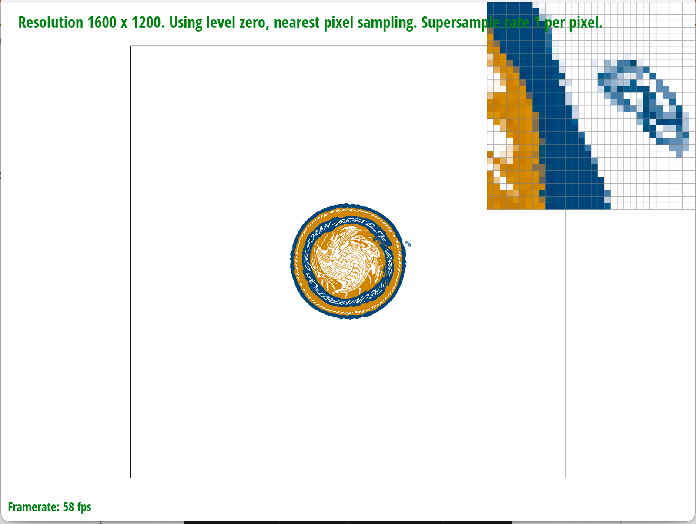
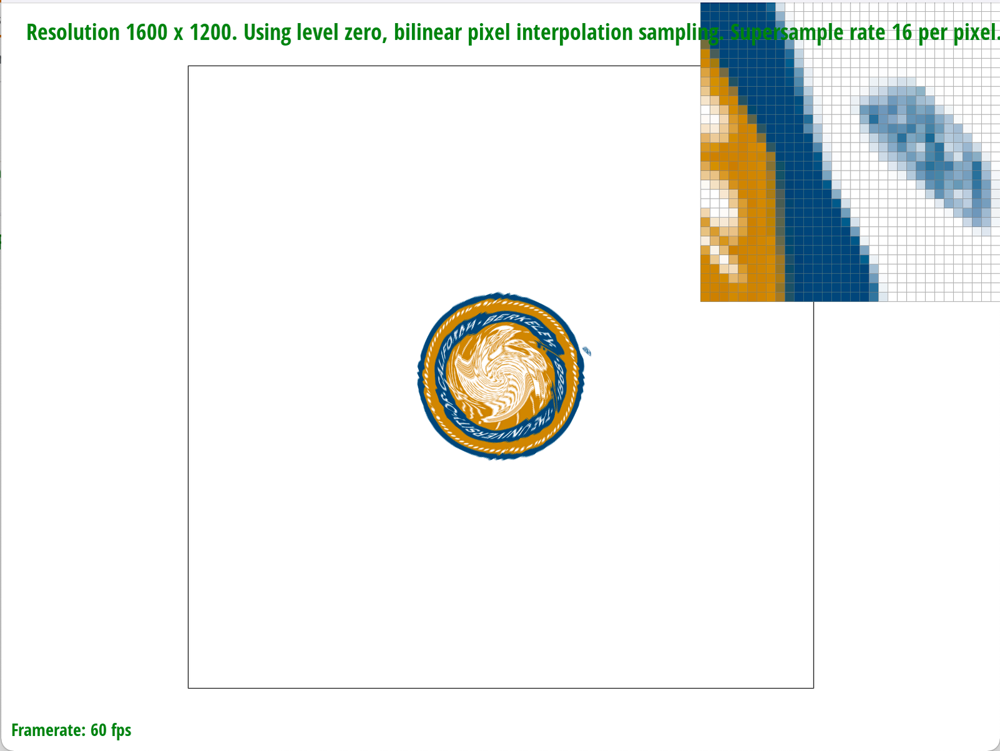
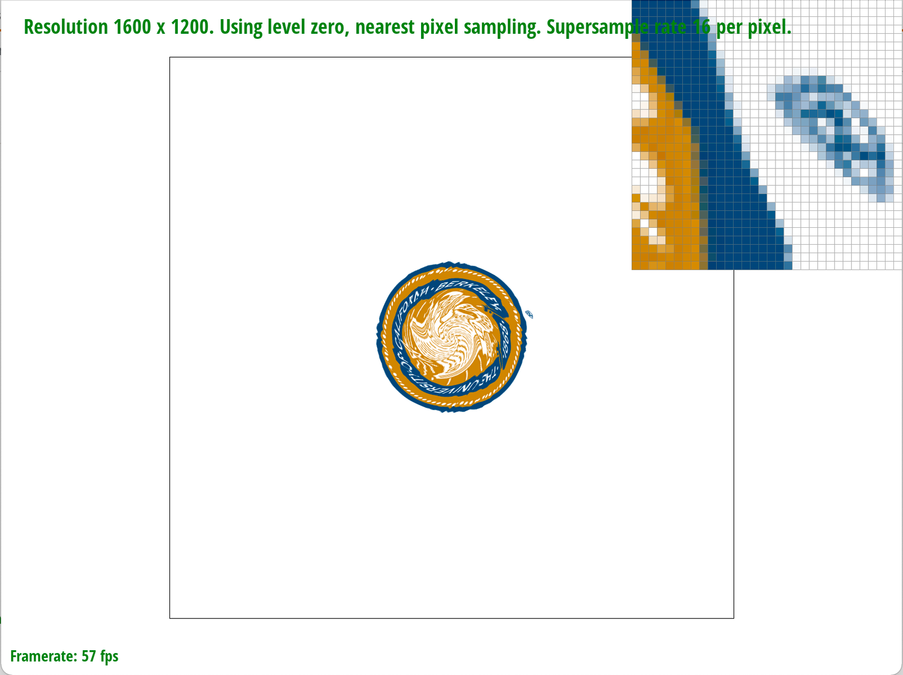
From the above images, we can see that bilinear pixel interpolation results in less jaggies compared to
nearest pixel sampling given the same supersampling rate. We can also see that as we increase the
supersample rate, the antialiasing power improves as well. Hence, the combination of bilinear sampling
at sampling rate of 16 samples per pixel performs the best at removing jaggies.
3. Comment on the relative differences. Discuss when there will be a large difference between the two
methods and why.
Bilinear sampling takes the 4 nearest points on the texture map and takes the weighted average of these
4 points. As a result, it performs better in anti-aliasing and removing jaggies. Meanwhile, nearest
neighbor sampling simply takes the nearest point on the texture map, which results in a worse
performance in removal of jaggies. There will be a large difference between the two methods when the
image coordinate is way smaller than the texture coordinate. When this happens, nearest neighbor
sampling method will be more prone to Moire’s effect and jaggies, because the “nearest neighbor” in the
large texture coordinate is not a good representation of the small and detailed image that we want to
present.
Task 6
1. Explain level sampling in your own words and describe how you implemented it for texture mapping.
Level sampling is a technique that allows us to sample from textures in multiple mipmap levels and use
different resolution level for different coordinates, which helps with effectively antialiasing the
entire image. It helps solve the problem of Moire’s effect by selecting lower resolution mipmap layers
for details “further away” in the image. To implement level sampling, we first need to use barycentric
coordinates three times to find the corresponding points on the map for the sampled point (x, y), (x +
1, y), and (x, y + 1). We do this by multiplying the alpha, beta, and gamma values by the vertices of
the triangle on the texture map. We then calculate the level of mipmap to use with du_dx, du_dy, dv_dx,
dv_dy, and the formula provided in lecture. Then, based on the level and pixel sampling methods, we call
the respective sampling functions. If the level is 0, then it is the same as task 5 and we just call
sample_nearest or sample_bilinear with level 0. If L_NEAREST is used, then we round the mip map level to
the nearest integer and use that as the level instead. If L_LINEAR is used, then we use a linear
combination of the color at the two closest mip map levels (floor(level) and ceil(level)) at the given
coordinates on the texture map.
2. You can now adjust your sampling technique by selecting pixel sampling, level sampling, or the number
of samples per pixel. Describe the tradeoffs between speed, memory usage, and antialiasing power between
the three various techniques.
Difference in Pixel Sampling:
Nearest neighbor sampling method would be faster than bilinear sampling method, as nearest neighbor
sampling naively takes the color of the nearest pixel, which also results in its weak antialiasing
power. On the other hand, bilinear sampling has a slower runtime, as it has to sample 4 texels per 1
sampled texel with nearest sampling method.
Difference in Level Sampling:
The difference between level sampling and no level sampling is the amount of memory that is used. Level
sampling requires us to hold all levels of texture mipmaps, hence, it would take up 4/3 of the original
size in memory. Storing many levels have an advantage on antialiasing power, as we are able to choose
different mipmap levels relative to coordinates (how near or how far we are).
Difference in Number of Samples Per Pixel:
As we increase the number of samples per pixel, the runtime increases, since we would have to check
whether each subpixel passes the three line test, sample each subpixel, then average them up.
Simultaneously, sampling more times per pixel increases antialiasing power as we described in Task 2.
Overall, we see a tradeoff between the amount of memory and speed, and antialiasing power. For instance,
trilinear sampling has the most antialiasing power, but it uses more memory to store multiple levels of
mipmaps and more runtime to perform bilinear sampling.
3. Using a png file you find yourself, show us four versions of the image, using the combinations of
L_ZERO and P_NEAREST, L_ZERO and P_LINEAR, L_NEAREST and P_NEAREST, as well as L_NEAREST and P_LINEAR.
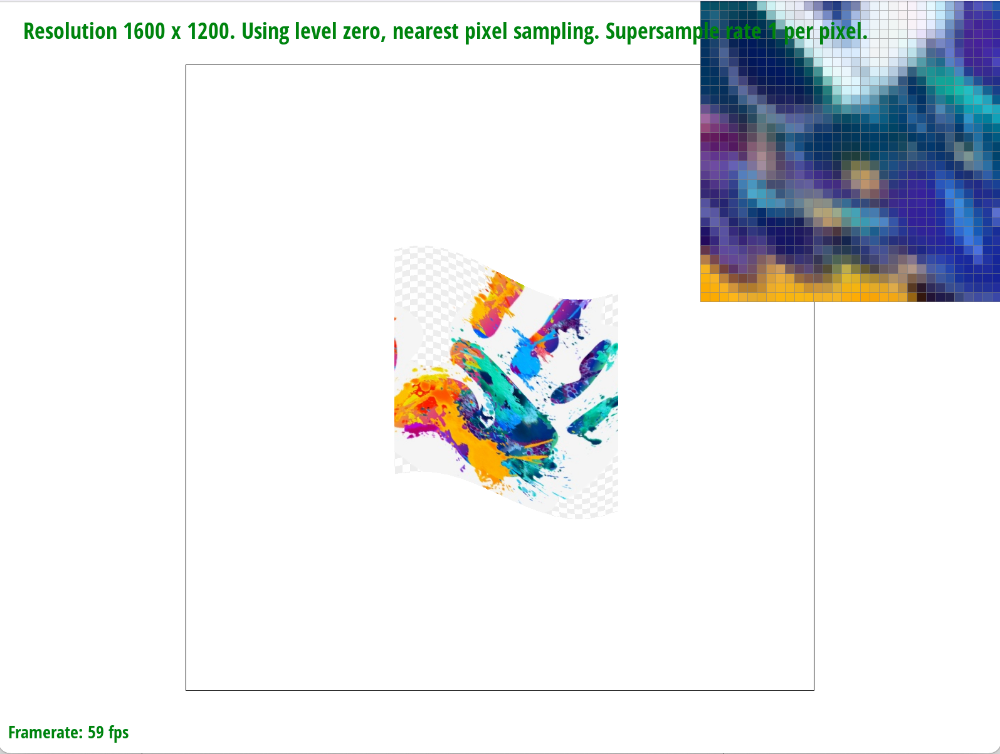
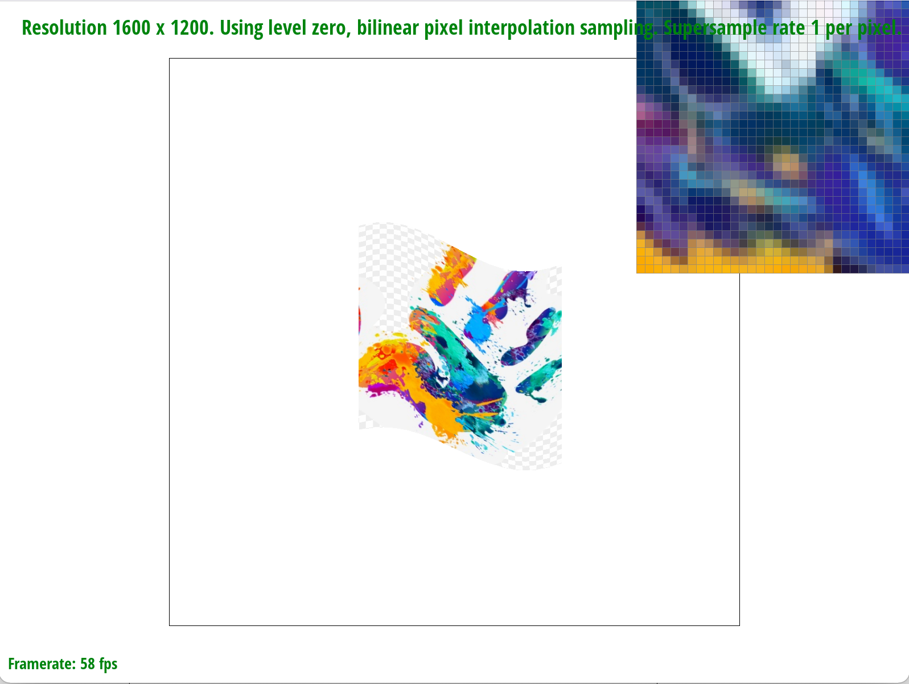
 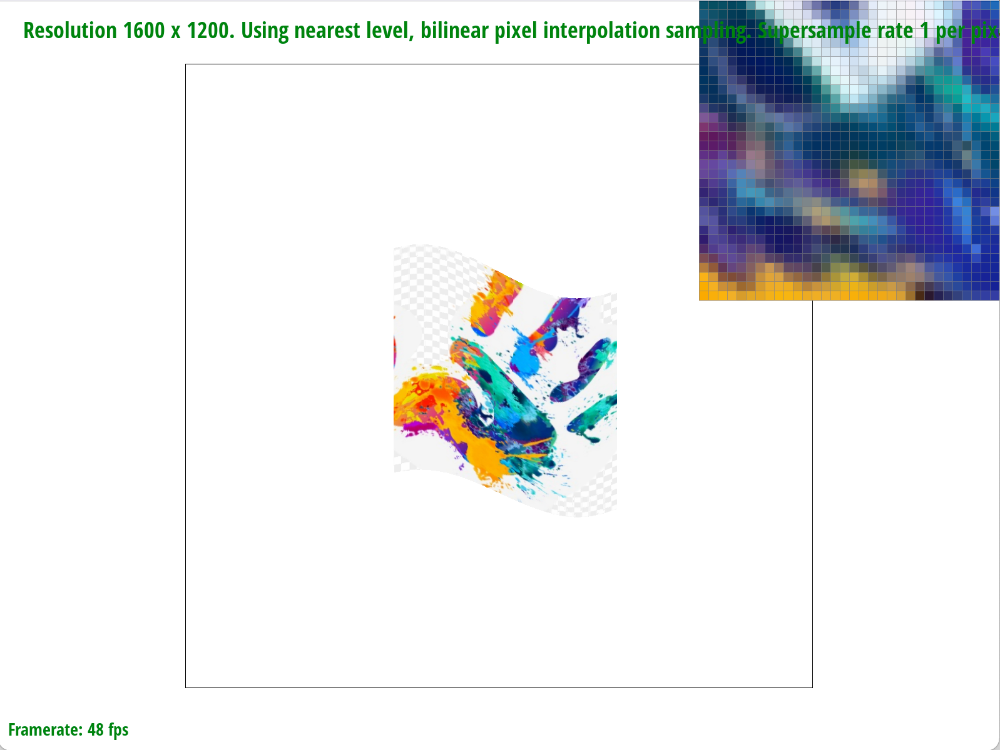
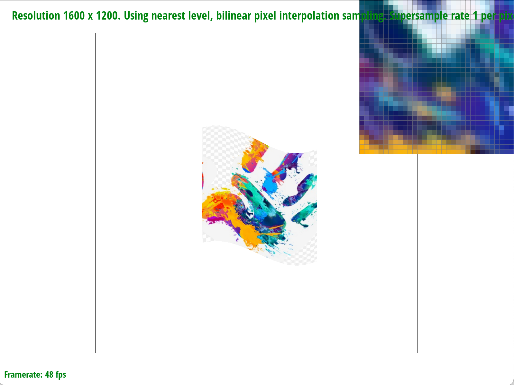
Level 0 seems to have more aliasing artifacts like jaggies compared to nearest level. And nearest pixel
sampling also seems to have more aliasing artifacts compared to bilinear sampling. Bilinear sampling
makes the images look more blurry in general, which reduces the aliasing artifacts we see.